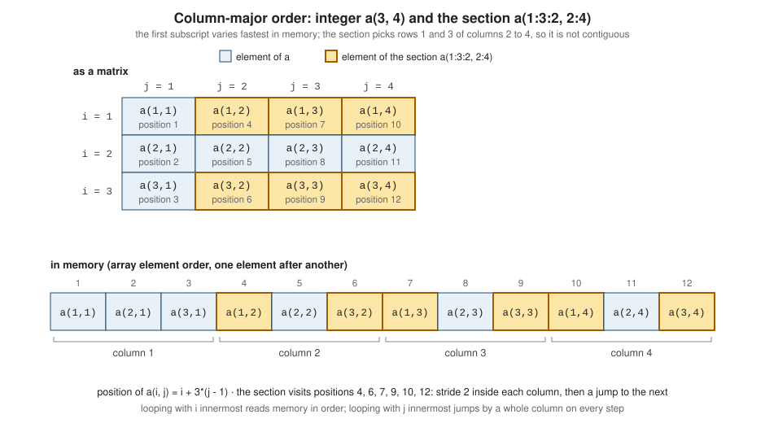

Arrays Fundamentals
|
This content was generated with the assistance of AI and should be verified against the official documentation before being relied on in production. |
This page is written against Fortran 2023 (ISO/IEC 1539-1:2023, J3/23-007r1) and was checked on 2026-10-18. Every
example was compiled warning-free with gfortran -std=f2023 -Wall -Wextra -pedantic -fimplicit-none -fcheck=all
(GNU Fortran 16.2) and run, and was also built and run with LLVM Flang 23 where it compiles; the output shown is real
output from gfortran, and the two compilers agreed unless the text says otherwise. Examples that are deliberately wrong,
or that use a feature a compiler rejects, are labelled as such and show the real diagnostics. Arrays are described in
clause 5.4.6 ("Array") and clause 9.5 ("Arrays"): 9.5.2 whole arrays, 9.5.3 array elements and array sections, 9.5.3.3 array
element order, 9.5.3.4 array sections with subscript triplets and vector subscripts, and 9.5.4 simply contiguous array
designators. Declarations are in 8.5.8 (the dimension attribute), array constructors in 7.8, array assignment in 10.2.1.3,
masked assignment in 10.2.3 and the array intrinsic procedures in clause 16.
Arrays are the reason Fortran exists. A numerical program is made of arrays of numbers, and the language gives them
first-class status: an array carries its shape, a whole array can appear in an expression or an assignment, a part of an
array is selected with a subscript range, and the compiler is told, by construction, that two different array names do
not overlap. In the running example, heatflow, the temperature field u of heatflow_grid is a rank-two real(dp)
array, the Jacobi and FTCS kernels in heatflow_kernels are expressions over shifted sections of it, and the boundary
conditions in heatflow_grid assign whole rows and columns with single statements. This page covers the fundamentals:
how an array is declared, how it is laid out in memory, how to select and combine its elements, and what the standard
says about the edge cases. Dynamic arrays are in
Allocatable Arrays and Dynamic Memory,
dummy arguments in
Array Arguments: Assumed Shape, Size and Rank,
the library of array functions in
Array Intrinsics and Reductions, and the loop-order
and cache consequences in
Performance and Memory Layout.
The vocabulary: rank, extent, size, shape and conformance
The standard defines a small vocabulary (5.4.6) that every array statement uses:
| Term | Meaning | Inquiry |
|---|---|---|
rank |
the number of dimensions; a scalar has rank 0 |
|
extent |
the number of elements along one dimension; |
|
size |
the total number of elements, the product of the extents; zero if any extent is zero |
|
shape |
the rank-one array of extents |
|
bounds |
the lower and upper bound of each dimension, which may be negative or zero |
|
conformable |
two arrays of the same shape, or an array and a scalar |
checked by the compiler or at run time |
An array can have up to fifteen dimensions minus its corank (5.4.6 and Note 1 of 8.5.8.1); earlier standards (Fortran 90, 95 and 2003) allowed seven, and Fortran 2008 raised the limit. Both compilers used here accept rank 15 and reject rank 16:
program max_rank_16
implicit none
integer :: a(1, 1, 1, 1, 1, 1, 1, 1, 1, 1, 1, 1, 1, 1, 1, 2) ! rank 16
a = 7
print '(a, i0, a, i0)', 'rank = ', rank(a), ', size = ', size(a)
end program max_rank_16rank16.f90:3:60:
3 | integer :: a(1, 1, 1, 1, 1, 1, 1, 1, 1, 1, 1, 1, 1, 1, 1, 2) ! rank 16
| 1
Error: Array specification at (1) has more than 15 dimensionsTwo arrays are conformable when they have the same shape, and a scalar is conformable with any array (10.1.5.1). Every
intrinsic operation defined for scalars is defined for conformable operands and is applied element by element, producing a
result that has the shape of the array operand(s). An array of shape [3] and one of shape [1, 3] are not conformable,
and neither are two vectors of different length: the lower bounds do not matter, only the extents. A scalar is broadcast.
Declaring arrays
An array is declared with the dimension attribute or with an array specification attached to the entity (8.5.8.1). The
two forms below are equivalent, and an entity-level specification overrides the attribute for that entity:
real(dp), dimension(nx, ny) :: unew, uold ! both have shape [nx, ny]
real(dp) :: u(nx, ny), v(0:nx + 1), w(-3:3) ! bounds are part of the declaration
real(dp), dimension(nx, ny) :: a, b(nx) ! b(nx) overrides the attribute: b has rank 1An explicit-shape array has a lower and an upper bound for every dimension, written lower:upper; if the lower bound is
omitted it is one (8.5.8.2). The bounds may be positive, negative or zero. If the upper bound is smaller than the lower bound
the extent is zero and the array has size zero. A named local array of a procedure or block construct may have bounds
that are not constants (an automatic array, 8.5.8.2 and C831): they are evaluated once, on entry. A named constant may be
declared with implied shape, (*), taking its shape from the initialization expression (8.5.8.6). The kinds
dp and ip come from heatflow_kinds in the full project and from iso_fortran_env in the self-contained examples here.
program declare_arrays
use, intrinsic :: iso_fortran_env, only: real64
implicit none
integer, parameter :: dp = real64
integer, parameter :: nx = 4, ny = 3
real(dp) :: u(0:nx + 1, 0:ny + 1) ! lower bounds 0, ghost layer around nx x ny
real(dp), dimension(nx, ny) :: unew ! bounds 1:nx, 1:ny
integer :: counts(-2:2) ! negative lower bound
real(dp), parameter :: weights(*) = [0.25_dp, 0.5_dp, 0.25_dp] ! implied shape
logical :: mask(nx, ny, 2, 2, 2) ! rank 5
integer :: empty(5:4) ! extent 0
u = 0.0_dp
unew = 1.0_dp
counts = 0
mask = .false.
print '(a, 2(i0, 1x))', 'u: lbound = ', lbound(u)
print '(a, 2(i0, 1x))', 'u: ubound = ', ubound(u)
print '(a, 2(i0, 1x), a, i0, a, i0)', 'u: shape = ', shape(u), ' size = ', size(u), ' rank = ', rank(u)
print '(a, i0, a, i0)', 'unew: size(unew, 1) = ', size(unew, 1), ', size(unew, dim=2) = ', size(unew, dim=2)
print '(a, 2(i0, 1x))', 'counts: lbound, ubound = ', lbound(counts, 1), ubound(counts, 1)
print '(a, i0, a, i0)', 'weights: size = ', size(weights), ', ubound = ', ubound(weights, 1)
print '(a, 5(i0, 1x))', 'mask: shape = ', shape(mask)
print '(a, i0, 1x, i0, 1x, i0)', 'empty: size, lbound, ubound = ', size(empty), lbound(empty, 1), ubound(empty, 1)
print '(a, l1)', 'sum of weights is one: ', abs(sum(weights) - 1.0_dp) < epsilon(1.0_dp)
end program declare_arraysOutput:
u: lbound = 0 0
u: ubound = 5 4
u: shape = 6 5 size = 30 rank = 2
unew: size(unew, 1) = 4, size(unew, dim=2) = 3
counts: lbound, ubound = -2 2
weights: size = 3, ubound = 3
mask: shape = 4 3 2 2 2
empty: size, lbound, ubound = 0 1 0
sum of weights is one: TNote the zero-sized array empty(5:4): lbound and ubound of a zero-sized dimension report one and zero, because the
standard says that when the extent of the dimension is zero the result of lbound is 1 (16.9.119, Case (i)) and that of ubound is
the extent, zero (16.9.215); a zero-sized array is not an error.
The arrays above have constant bounds. Bounds that depend on a dummy argument or a module constant are legal in
procedures. The shape of a declared array is fixed for its lifetime; an array whose shape is decided at run time is
allocatable (see the allocatable page), and a dummy argument that takes the shape of its actual argument is
assumed-shape (see the array-arguments page). Those two, together with assumed-size (*) and assumed-rank (..), are the other forms
of array-spec in R814.
Fortran 2023: arrays as bounds, and the rank clause
Fortran 2023 adds two things to the declaration syntax (WG5 N2212, items US 17 and US 18). The bounds of an
explicit-shape array may be given by rank-one integer arrays of constant size, so that the standard’s own example
dimension([1, 2, 3]:10) means (1:10, 2:10, 3:10) (8.5.8.1, Note 2, and R818 to R819), and a rank(n) clause (8.5.17,
R829) gives the rank of an assumed-shape, allocatable or pointer entity with an integer constant instead of a list of colons.
The bounds-array form is rejected by both compilers on 2026-10-18 (gfortran reports the same error for the second declaration and then for every later use of the names):
program f23_bounds
implicit none
integer, parameter :: lo(2) = [0, -1]
integer, parameter :: hi(2) = [3, 2]
real :: a(lo:hi) ! F2023: bounds given by rank-one integer arrays
real :: b([1, 2, 3]:10) ! F2023: same as b(1:10, 2:10, 3:10)
print '(a, 2(i0, 1x))', 'shape(a) = ', shape(a)
print '(a, 3(i0, 1x))', 'shape(b) = ', shape(b)
end program f23_boundsf23_bounds.f90:5:19:
5 | real :: a(lo:hi) ! F2023: bounds given by rank-one integer arrays
| 1
Error: Explicit shaped array with nonconstant bounds at (1)and, for Flang 23,
error: Semantic errors in f23_bounds.f90
f23_bounds.f90:5:3: error: not yet implemented: TODO: Analyze overload for ExplicitShapeBoundsSpec
real :: a(lo:hi) ! F2023: bounds given by rank-one integer arrays
^^^^^^^^^^^^^^^^Source: J3/23-007r1, 8.5.8.1 DIMENSION attribute, R818 explicit-shape-bounds-spec, 8.5.17 RANK clause and WG5 N2212, The new features of Fortran 2023: array features (multiple subscripts, arrays as bounds, the rank clause)
The rank clause is accepted by Flang 23 and rejected by gfortran 16.2. This is a fragment checked with Flang only:
module m
implicit none
contains
subroutine show(x)
real, rank(2), intent(in) :: x ! F2023 rank clause: assumed-shape, rank 2
print '(a, 2(i0, 1x))', 'shape = ', shape(x)
end subroutine show
end module m
program f23_rank
use m
implicit none
real :: a(2, 3)
a = 0.0
call show(a)
end program f23_rankshape = 2 3f23_rank.f90:5:10:
5 | real, rank(2), intent(in) :: x ! F2023 rank clause: assumed-shape, rank 2
| 1
Error: Invalid character in name at (1)Source: J3/23-007r1, 8.5.8.1 DIMENSION attribute, R818 explicit-shape-bounds-spec, 8.5.17 RANK clause
Use the colon form of assumed-shape and deferred-shape arrays in portable code; rank(n) becomes useful when a generic
routine is written for several ranks (see
Generic and Rank Independent Programming).
Array element order and column-major storage
An array is a sequence of elements in a fixed array element order (9.5.3.3). The position of an element is given by its
subscript order value, which for rank two with bounds j1:k1, j2:k2 and extent d1 of the first dimension is
1 + (s1 - j1) + (s2 - j2)*d1 (Table 9.1). The first subscript varies fastest. For a 3 by 4 array with lower bounds one,
element a(i, j) is in position i + 3*(j - 1). This is column-major order, the opposite of C, C++ and Python (row-major),
and the same as MATLAB, R, Julia and the BLAS and LAPACK libraries. The standard calls it array element order and does not
promise a particular storage layout, only that every operation which depends on the order (whole-array output, reshape,
pack, transfer, constructors from arrays, sequence association) follows it; in practice processors
store an ordinary whole array contiguously in that order.

The consequence for loops is that the first subscript should be the innermost loop, so that successive iterations touch
successive addresses. The kernels in heatflow_kernels do this (do j outside, do i inside). The example shows the order
and the effects on reshape, whole-array output and element position:
program column_major
implicit none
integer, parameter :: nrow = 3, ncol = 4
integer :: a(nrow, ncol)
integer :: flat(nrow*ncol)
integer :: i, j, k
! Store each element's position in array element order, row index fastest.
k = 0
do j = 1, ncol ! slowest subscript outermost
do i = 1, nrow ! first subscript innermost: consecutive memory
k = k + 1
a(i, j) = k
end do
end do
print '(a)', 'a as a matrix (rows printed one per line):'
do i = 1, nrow
print '(4(i3))', a(i, :)
end do
print '(a, 12(i0, 1x))', 'whole array as an output list: ', a
print '(a, 12(i0, 1x))', 'transpose as an output list: ', transpose(a)
! A 1-D constructor is reshaped column by column unless order= says otherwise.
a = reshape([1, 2, 3, 4, 5, 6, 7, 8, 9, 10, 11, 12], [nrow, ncol])
print '(a, 4(i3))', 'reshape, row 1: ', a(1, :)
a = reshape([1, 2, 3, 4, 5, 6, 7, 8, 9, 10, 11, 12], [nrow, ncol], order=[2, 1])
print '(a, 4(i3))', 'order=[2,1], row 1: ', a(1, :)
! The subscript order value of a(i, j) is i + (j - 1)*nrow (Table 9.1 with lower bounds 1).
flat = pack(a, .true.) ! all elements, in array element order
i = 2; j = 3
print '(a, i0, a, l1)', 'a(2,3) is element ', i + (j - 1)*nrow, ' of the sequence: ', flat(i + (j - 1)*nrow) == a(i, j)
end program column_majorOutput:
a as a matrix (rows printed one per line):
1 4 7 10
2 5 8 11
3 6 9 12
whole array as an output list: 1 2 3 4 5 6 7 8 9 10 11 12
transpose as an output list: 1 4 7 10 2 5 8 11 3 6 9 12
reshape, row 1: 1 4 7 10
order=[2,1], row 1: 1 2 3 4
a(2,3) is element 8 of the sequence: TSource: J3/23-007r1, 9.5.3.3 Array element order, Table 9.1 Subscript order value, and 16.9.175 RESHAPE
reshape(source, shape, pad, order) (16.9.175) fills the result in array element order, the first dimension fastest, and
order=[2, 1] fills it row by row instead. transpose reads one order and writes the other.
The same order applies to formatted and list-directed I/O. A whole array in an output list is transferred in array element
order, so with a format that has four items per line a 3 by 4 array is printed with its columns running one into the next, not
row by row; the implied-do form ((a(i, j), j = 1, ncol), i = 1, nrow) prints row by row. Input has the same
two forms, and mixing them up fills the transposed array without any error:
program array_io
implicit none
integer, parameter :: nrow = 3, ncol = 4
integer :: a(nrow, ncol), b(nrow, ncol)
integer :: i, j, k
character(len=40) :: text = '1 2 3 4 5 6 7 8 9 10 11 12'
a = reshape([(k, k = 1, nrow*ncol)], [nrow, ncol])
print '(a)', 'print "(4i3)", a -- the whole array in element order, four per line:'
print '(4i3)', a
print '(a)', 'print "(4i3)", ((a(i, j), j = 1, ncol), i = 1, nrow) -- row by row:'
print '(4i3)', ((a(i, j), j = 1, ncol), i = 1, nrow)
! Reading with the same two shapes from an internal file.
read (text, *) b ! fills a(1,1), a(2,1), a(3,1), a(1,2), ...
print '(a, 4i3)', 'read into the whole array, row 1: ', b(1, :)
read (text, *) ((b(i, j), j = 1, ncol), i = 1, nrow) ! fills row by row
print '(a, 4i3)', 'read with an implied-do, row 1: ', b(1, :)
end program array_ioOutput:
print "(4i3)", a -- the whole array in element order, four per line:
1 2 3 4
5 6 7 8
9 10 11 12
print "(4i3)", ((a(i, j), j = 1, ncol), i = 1, nrow) -- row by row:
1 4 7 10
2 5 8 11
3 6 9 12
read into the whole array, row 1: 1 4 7 10
read with an implied-do, row 1: 1 2 3 4How much the order matters depends on the machine, because a stride-one traversal is cache- and vector-friendly and a
stride of a whole column is not. The measurement below sums a 4000 by 4000 real(dp) array (128 MB) twice, once with i
innermost and once with j innermost. It was compiled with gfortran -std=f2023 -Wall -Wextra -pedantic -O2 and run twice in
an aarch64 container; Flang 23 with -O2 gave a similar ratio. The absolute times depend on the machine and are only
illustrative.
program loop_order
use, intrinsic :: iso_fortran_env, only: real64, int64
implicit none
integer, parameter :: dp = real64
integer, parameter :: n = 4000
real(dp), allocatable :: a(:, :)
real(dp) :: total
integer(int64) :: t0, t1, rate
integer :: i, j
allocate (a(n, n))
a = 1.0_dp
call system_clock(count_rate=rate)
total = 0.0_dp
call system_clock(t0)
do j = 1, n ! first subscript innermost: consecutive addresses
do i = 1, n
total = total + a(i, j)
end do
end do
call system_clock(t1)
print '(a, es10.3, a, f8.4, a)', 'i innermost (stride 1): total = ', total, ' ', real(t1 - t0, dp)/real(rate, dp), ' s'
total = 0.0_dp
call system_clock(t0)
do i = 1, n ! last subscript innermost: stride n*8 bytes
do j = 1, n
total = total + a(i, j)
end do
end do
call system_clock(t1)
print '(a, es10.3, a, f8.4, a)', 'j innermost (stride n): total = ', total, ' ', real(t1 - t0, dp)/real(rate, dp), ' s'
end program loop_orderOutput:
i innermost (stride 1): total = 1.600E+07 0.0159 s
j innermost (stride n): total = 1.600E+07 0.1158 sSource: GNU Fortran manual: Options for code generation conventions and J3/23-007r1, 9.5.3.3 Array element order
At higher optimization levels a compiler may interchange the loops itself, so code written in the wrong order is sometimes rescued, but whole-array statements and sections give the compiler the freedom without depending on it.
Array elements and sections
An array element is a scalar designated by a full list of scalar subscripts, a(i, j). An array section is a part of
an array and is itself an array: it is written with a subscript triplet [first]:[last][:stride] or a vector subscript in
at least one position (9.5.3.1 and 9.5.3.4). The rules, all from 9.5.3.4:
-
An omitted first or last subscript means the lower or upper bound of the whole array, and an omitted stride means 1;
a(:, 2)is column 2,a(2:, :)all rows from the second. -
The stride may not be zero. A positive stride walks upward from the first subscript to the largest value not greater than the last; a negative stride walks downward, and
b(9:1:-2)of a vector of ten isb(9), b(7), b(5), b(3), b(1). The sequence is empty when the first is above the last (positive stride) or below it (negative stride), and an empty sequence gives a zero-sized section. -
A triplet need not be inside the declared bounds as long as the values actually selected are (9.5.3.4.2, Note 3):
b(3:11:7)of a vector of ten selects onlyb(3)andb(10). -
The rank of a section is the number of triplets and vector subscripts. A scalar subscript removes a dimension:
a(2, :)has rank 1,a(2:2, :)has rank 2 and shape[1, 4]. A subscript triplet of extent one is not a scalar. -
The elements of a section are in the array element order of the array they belong to (9.5.3.4.1).
-
A section designates the storage of the original, it is not a copy: assigning to
a(1:3:2, 2:4)changesa. It does not inherit theallocatableorpointerattribute of the whole array (9.5.3.1, Note 2). -
For a section of a character array a substring range may follow the subscripts, and for a complex array
%reand%imgive a section of the real or imaginary parts (R918).
The next program uses the section from the figure, a(1:3:2, 2:4): the first and third rows of columns 2 to 4, shape
[2, 3] with six of the twelve elements.
program sections
implicit none
integer, parameter :: nrow = 3, ncol = 4
integer :: a(nrow, ncol)
integer :: s(2, 3)
integer :: v(10)
integer :: i
a = reshape([(i, i = 1, nrow*ncol)], [nrow, ncol])
! The section highlighted in the figure: rows 1 and 3, columns 2 to 4.
print '(a, 2(i0, 1x))', 'shape(a(1:3:2, 2:4)) = ', shape(a(1:3:2, 2:4))
s = a(1:3:2, 2:4)
print '(a, 3(i3))', 'section row 1: ', s(1, :)
print '(a, 3(i3))', 'section row 2: ', s(2, :)
! Omitted bounds and strides, a scalar subscript drops a dimension.
print '(a, 4(i3))', 'a(2, :) = ', a(2, :) ! rank 1, shape [4]
print '(a, 3(i3))', 'a(:, 4) = ', a(:, 4) ! rank 1, shape [3]
print '(a, 2(i3))', 'a(2:3, 2:2) = ', a(2:3, 2:2) ! rank 2 shape [2, 1] printed in element order
print '(a, 2(i0, 1x))', 'shape(a(2:3, 2:2)) = ', shape(a(2:3, 2:2))
print '(a, 2(i0, 1x))', 'shape(a(2, 2:2)) = ', shape(a(2, 2:2))
! Negative strides and triplets that run past the bounds.
v = [(10*i, i = 1, 10)]
print '(a, 5(i4))', 'v(9:1:-2) = ', v(9:1:-2)
print '(a, 2(i4))', 'v(3:11:7) = ', v(3:11:7) ! legal: only 3 and 10 are selected (9.5.3.4.2, Note 3)
print '(a, i0)', 'size(v(5:4)) = ', size(v(5:4)) ! empty triplet: zero-sized
! A section is the same storage, not a copy.
a(1:3:2, 2:4) = 0
print '(a, 4(i3))', 'row 1 after zeroing the section: ', a(1, :)
print '(a, 4(i3))', 'row 2 after zeroing the section: ', a(2, :)
! The right-hand side is fully evaluated first, so overlapping sections are safe.
v(2:10) = v(1:9)
print '(a, 10(i4))', 'v(2:10) = v(1:9): ', v
end program sectionsOutput:
shape(a(1:3:2, 2:4)) = 2 3
section row 1: 4 7 10
section row 2: 6 9 12
a(2, :) = 2 5 8 11
a(:, 4) = 10 11 12
a(2:3, 2:2) = 5 6
shape(a(2:3, 2:2)) = 2 1
shape(a(2, 2:2)) = 1
v(9:1:-2) = 90 70 50 30 10
v(3:11:7) = 30 100
size(v(5:4)) = 0
row 1 after zeroing the section: 1 0 0 0
row 2 after zeroing the section: 2 5 8 11
v(2:10) = v(1:9): 10 10 20 30 40 50 60 70 80 90Two points deserve emphasis. First, the last statements assign overlapping sections, v(2:10) = v(1:9), and the result is a
shift by one: the right-hand side is evaluated as if completely before the left-hand side is defined (10.2.1.3, with
Note 4 x(1:10) = x(10:1:-1) reversing the array), so no temporary is needed in the source. The compiler may or may not need a temporary;
-Warray-temporaries reports the ones gfortran creates, and it reported none for this program. Second, a section does not keep the bounds of the
array it was cut from: lbound(a(-3:6), 1) is 1, not -3. In general the lower bound reported for a section or other
expression is 1 and the upper bound is its extent (16.9.119, Case (i), which returns the declared lower bound only for a whole array).
What a dummy argument sees depends on how it is declared:
module show_bounds
implicit none
contains
subroutine report(label, v)
character(*), intent(in) :: label
integer, intent(in) :: v(:) ! assumed shape: lower bound is 1
print '(a, a, 3(1x, i0))', label, ' lbound, ubound, size =', lbound(v, 1), ubound(v, 1), size(v)
end subroutine report
subroutine report_lb(label, v)
character(*), intent(in) :: label
integer, intent(in) :: v(0:) ! assumed shape with chosen lower bound
print '(a, a, 3(1x, i0))', label, ' lbound, ubound, size =', lbound(v, 1), ubound(v, 1), size(v)
end subroutine report_lb
end module show_bounds
program lower_bounds_of_sections
use show_bounds
implicit none
integer :: a(-3:6)
integer :: i
a = [(i, i = 1, 10)]
print '(a, 2(1x, i0))', 'actual a: lbound, ubound =', lbound(a, 1), ubound(a, 1)
print '(a, 2(1x, i0))', 'section a(-3:6) lbound, ubound =', lbound(a(-3:6), 1), ubound(a(-3:6), 1)
call report('a ', a)
call report('a(0:6) ', a(0:6))
call report_lb('a(0:6) ', a(0:6))
call report('a(6:0:-2)', a(6:0:-2))
end program lower_bounds_of_sectionsOutput:
actual a: lbound, ubound = -3 6
section a(-3:6) lbound, ubound = 1 10
a lbound, ubound, size = 1 10 10
a(0:6) lbound, ubound, size = 1 7 7
a(0:6) lbound, ubound, size = 0 6 7
a(6:0:-2) lbound, ubound, size = 1 4 4The assumed-shape dummy v(:) always has lower bound 1; v(0:) declares the lower bound it wants, and the extent is taken from
the actual argument. The details, including contiguous and the copy that a non-contiguous section can force, are on the
array-arguments page. A section is simply contiguous (9.5.4) when it has no vector subscript, all triplets but the last are
colons, the last has no stride, and no scalar subscript follows a triplet: a(:, 2) and a(2:3, 1) are contiguous, a(1:3:2, 2:4) and
a(2, :) are not.
Vector subscripts
A vector subscript is a rank-one integer array expression used as a subscript (R925, 9.5.3.4.3). It selects the
elements named by its values, in that order, and the section has one dimension for each vector subscript or triplet. It
gathers (x([6, 5, 4, 3, 2, 1]) reverses a vector, x(pack(...)) collects elements by index) and, when the values are
distinct, it scatters:
program vector_subscripts
implicit none
integer :: z(5, 7)
integer :: u(3), v(4)
integer :: x(6)
integer :: i
z = reshape([(i, i = 1, 35)], [5, 7])
u = [1, 3, 2]
v = [2, 1, 1, 3]
print '(a, 4(i3))', 'z(3, v) = ', z(3, v) ! row 3, columns in the order of v (duplicates allowed in a read)
print '(a, 3(i3))', 'z(u, 2) = ', z(u, 2)
print '(a, 2(i0, 1x))', 'shape(z(u, v)) = ', shape(z(u, v))
! Permuting and gathering with a vector subscript.
x = [10, 20, 30, 40, 50, 60]
print '(a, 6(i3))', 'x([6, 5, 4, 3, 2, 1]) = ', x([6, 5, 4, 3, 2, 1])
print '(a, 3(i3))', 'x(pack([(i, i = 1, 6)], x > 30)) = ', x(pack([(i, i = 1, 6)], x > 30))
! A vector subscript without duplicates may be assigned to (scatter).
x([1, 3, 5]) = [-1, -3, -5]
print '(a, 6(i4))', 'after x([1, 3, 5]) = [-1, -3, -5]: ', x
end program vector_subscriptsOutput:
z(3, v) = 8 3 3 13
z(u, 2) = 6 8 7
shape(z(u, v)) = 3 4
x([6, 5, 4, 3, 2, 1]) = 60 50 40 30 20 10
x(pack([(i, i = 1, 6)], x > 30)) = 40 50 60
after x([1, 3, 5]) = [-1, -3, -5]: -1 20 -3 40 -5 60The values are used as written, so the same index may appear twice in a read (the standard’s example z(3, v) with
v = [2, 1, 1, 3]). Two restrictions follow from that:
-
If two elements of the vector have the same value the section is not definable: it cannot be assigned to, and an assignment to it is erroneous. The compiler cannot know in general, and no diagnostic is required. With
-fcheck=allgfortran stays silent and both gfortran and Flang store the last value:
program vector_subscript_duplicate
implicit none
integer :: x(4)
integer :: idx(3)
x = [1, 2, 3, 4]
idx = [1, 2, 1]
x(idx) = [10, 20, 30] ! duplicate index: the section is not definable (9.5.3.4.3)
print '(a, 4(i3))', 'x = ', x
end program vector_subscript_duplicatex = 30 20 3 4-
A vector-subscripted section cannot be the actual argument for a non-elemental dummy with
intent(out),intent(inout),asynchronousorvolatile, because the dummy is not definable (15.5.2.5). This one is detected at compile time:
module m
implicit none
contains
subroutine zero(y)
integer, intent(out) :: y(:)
y = 0
end subroutine zero
end module m
program vector_subscript_out
use m
implicit none
integer :: x(4)
x = [1, 2, 3, 4]
call zero(x([1, 3])) ! vector-subscripted actual for an intent(out) dummy
print '(a, 4(i3))', 'x = ', x
end program vector_subscript_outvecsub_out.f90:15:12:
15 | call zero(x([1, 3])) ! vector-subscripted actual for an intent(out) dummy
| 1
Error: Array-section actual argument with vector subscripts at (1) is incompatible with INTENT(OUT), INTENT(INOUT), VOLATILE or ASYNCHRONOUS attribute of the dummy argument 'y'error: Semantic errors in vecsub_out.f90
vecsub_out.f90:15:13: error: Actual argument associated with INTENT(OUT) dummy argument 'y=' is not definable
call zero(x([1, 3])) ! vector-subscripted actual for an intent(out) dummy
^^^^^^^^^
vecsub_out.f90:15:13: because: Variable 'x([INTEGER(8)::1_8,3_8])' has a vector subscript
call zero(x([1, 3])) ! vector-subscripted actual for an intent(out) dummy
^^^^^^^^^A section with a vector subscript is not simply contiguous (9.5.4), it cannot be the target of a pointer assignment (C1028), and it may not be
finalized by a non-elemental final subroutine (9.5.3.4.3). Whole-array assignment with such a section on the left must use an
index set that is known to be free of duplicates; otherwise use where, merge or pack.
Fortran 2023: multiple subscripts
Fortran 2023 adds multiple subscripts (R920, R923, 9.5.3.2; WG5 N2212 item US 17): an @ followed by a rank-one integer
array supplies a whole list of subscripts, so that a(@[3, 5]) means a(3, 5) and a(@[1, 2]:[3, 4]) means a(1:3, 2:4). It is meant for
code that handles arrays of any rank, where the number of subscripts is not known when the code is written. Neither
compiler implements it on 2026-10-18; both reject the examples from the standard:
program f23_at
implicit none
integer :: a(4, 4)
integer :: i
a = reshape([(i, i = 1, 16)], [4, 4])
print '(a, i0)', 'a(@[3, 2]) = ', a(@[3, 2])
print '(a, 2(i0, 1x))', 'a(@[1, 2]:[3, 4]) shape = ', shape(a(@[1, 2]:[3, 4]))
end program f23_atf23_at.f90:6:39:
6 | print '(a, i0)', 'a(@[3, 2]) = ', a(@[3, 2])
| 1
Error: Expected array subscript at (1)error: Semantic errors in f23_at.f90
f23_at.f90:6:39: error: No explicit type declared for '@'
print '(a, i0)', 'a(@[3, 2]) = ', a(@[3, 2])
^Zero-sized arrays
An array may have size zero (5.4.6 and 9.5.3.4.1), and zero-sized arrays are always defined (19.6.2). They
arise from a(5:4), from a(1:0), from an allocation with an extent of zero, from an empty constructor
[integer ::], and from a section whose triplet is empty. They are legal everywhere an array is, which is why code that
tolerates the empty case needs no special branch: a do loop over them runs zero times, a whole-array assignment to
them does nothing, and a reduction returns the identity of its operation.
program zero_sized
use, intrinsic :: iso_fortran_env, only: real64
implicit none
integer, parameter :: dp = real64
real(dp) :: x(10)
real(dp), allocatable :: none(:)
integer :: n, i
real(dp) :: total
x = [(real(i, dp), i = 1, 10)]
n = 0
allocate (none(n)) ! allocated, extent 0: not the same as unallocated
print '(a, i0)', 'size(x(1:0)) = ', size(x(1:0))
print '(a, i0)', 'size(none) = ', size(none)
print '(a, l1)', 'allocated(none) = ', allocated(none)
print '(a, i0)', 'size([integer ::]) = ', size([integer ::])
print '(a, i0)', 'size([(i, i = 1, n)]) = ', size([(i, i = 1, n)])
total = 0.0_dp
do i = 1, size(none) ! zero trips: the loop is simply skipped
total = total + none(i)
end do
print '(a, f4.1, a, f4.1, a, f4.1)', 'sum = ', sum(none), ', product = ', product(none), ', loop total = ', total
print '(a, l1, a, l1)', 'any = ', any(none > 0.0_dp), ', all = ', all(none > 0.0_dp)
print '(a, es12.3e3)', 'maxval(none) = ', maxval(none)
print '(a, es12.3e3)', 'minval(none) = ', minval(none)
print '(a, i0)', 'maxloc(none) = ', maxloc(none, dim=1)
x(1:0) = 99.0_dp ! assignment to a zero-sized section does nothing
print '(a, f4.1)', 'x(1) is still ', x(1)
end program zero_sizedOutput:
size(x(1:0)) = 0
size(none) = 0
allocated(none) = T
size([integer ::]) = 0
size([(i, i = 1, n)]) = 0
sum = 0.0, product = 1.0, loop total = 0.0
any = F, all = T
maxval(none) = -1.798E+308
minval(none) = 1.798E+308
maxloc(none) = 0
x(1) is still 1.0sum of a zero-sized array is zero, product is one (16.9.165), any is false, all is true, maxval is the negative number
of largest magnitude supported for the type and kind (16.9.138), -huge for the real(dp) array above, minval the
largest positive one, and maxloc returns zeros. A zero-sized array is allocated if an allocate has produced it: it is not the
same as an unallocated one, and allocated(none) is true above. The rule for lbound and ubound of a
zero-sized array was shown in the declaration example.
Array constructors
An array constructor builds a rank-one array value (7.8, R777 to R784). It is written [ ... ]
(Fortran 2003) or (/ ... /) (Fortran 90), and every element of the list is a scalar, an array whose elements are taken in
array element order, or an implied do (value-list, i = first, last[, step]), which expands as the corresponding loop would. An empty list
gives a zero-sized array and requires a type-spec. A constructor is always rank one; reshape gives it other shapes.
-
Without a type-spec every element must have the same type and kind (C7120), and for character the same length.
[1, 2.5, 3]is an error. -
With a type-spec
[real(dp) :: 1, 2, 3]each value is converted as in an intrinsic assignment (7.8), which fixes the type of mixed lists, the kind, and for characters the length:[character(len=7) :: 'Takata', 'Tanaka', 'Hayashi']. -
The implied-do variable is a local variable of the constructor whose scope is the implied do (19.4); nested implied do loops vary the inner variable fastest. Fortran 2008 also allows an integer type-spec for it:
[(k, integer :: k = 1, 3)]. Flang 23 accepts that form, gfortran 16.2 rejects it with "Expected a right parenthesis in expression". -
A constructor can contain boz literal constants only when the type-spec is integer or real (C7126).
-
Constructors are fine as initialization of named constants and variables, and are constant expressions if their elements are.
program constructors
use, intrinsic :: iso_fortran_env, only: real64
implicit none
integer, parameter :: dp = real64
integer, parameter :: n = 5
integer :: idx(n)
real(dp) :: x(n), y(2*n)
real(dp) :: stencil(3, 3)
character(len=7) :: names(3)
integer :: i, j
idx = [(i, i = 1, n)] ! implied do
x = [(0.1_dp*i, i = 0, n - 1)]
y = [x, x(n:1:-1)] ! array values contribute their elements in order
print '(a, 5(i3))', 'idx = ', idx
print '(a, 5(f5.1))', 'x = ', x
print '(a, 10(f4.1))', 'y = ', y
! Nested implied do: the inner loop runs fastest, as in a do nest.
print '(a, 6(i3))', 'nested = ', [((10*i + j, j = 1, 3), i = 1, 2)]
! A constructor is always rank one; reshape gives it a shape.
stencil = reshape([0.0_dp, 1.0_dp, 0.0_dp, &
1.0_dp, -4.0_dp, 1.0_dp, &
0.0_dp, 1.0_dp, 0.0_dp], [3, 3])
print '(a, 9(f5.1))', 'stencil = ', stencil
! type-spec: converts the values and sets the character length.
names = [character(len=7) :: 'Takata', 'Tanaka', 'Hayashi']
print '(3(a, 1x))', names
print '(a, i0)', 'len of the constructor = ', len([character(len=7) :: 'a', 'bcd'])
print '(a, 3(f4.1))', 'real :: from integers = ', [real(dp) :: 1, 2, 3]
print '(a, i0)', 'size([real :: ]) = ', size([real :: ])
! The old (/ ... /) delimiters are still valid.
print '(a, 3(i2))', 'old style = ', (/ 1, 2, 3 /)
end program constructorsOutput:
idx = 1 2 3 4 5
x = 0.0 0.1 0.2 0.3 0.4
y = 0.0 0.1 0.2 0.3 0.4 0.4 0.3 0.2 0.1 0.0
nested = 11 12 13 21 22 23
stencil = 0.0 1.0 0.0 1.0 -4.0 1.0 0.0 1.0 0.0
Takata Tanaka Hayashi
len of the constructor = 7
real :: from integers = 1.0 2.0 3.0
size([real :: ]) = 0
old style = 1 2 3The two commonest constructor mistakes are mixing types, which is rejected, and character values of different length, which is rejected by gfortran in standard mode and silently padded by Flang 23. Both are fixed by a type-spec.
program constructor_errors
implicit none
real :: x(3)
x = [1, 2.5, 3] ! mixed integer and real: C7120
print *, x
end program constructor_errorsctor_bad.f90:4:9:
4 | x = [1, 2.5, 3] ! mixed integer and real: C7120
| 1
Error: Element in INTEGER(4) array constructor at (1) is REAL(4)error: Semantic errors in ctor_bad.f90
ctor_bad.f90:4:3: error: Dimension 1 of left-hand side has extent 3, but right-hand side has extent 2
x = [1, 2.5, 3] ! mixed integer and real: C7120
^
ctor_bad.f90:4:11: error: Values in array constructor must have the same declared type when no explicit type appears
x = [1, 2.5, 3] ! mixed integer and real: C7120
^^^program constructor_lengths
implicit none
character(len=3) :: c(2)
c = ['ab', 'abc'] ! different character lengths
print *, c
end program constructor_lengthsctor_bad2.f90:4:12:
4 | c = ['ab', 'abc'] ! different character lengths
| 1
Error: Different CHARACTER lengths (2/3) in array constructor at (1) ab abcA constructor is evaluated in full even when it appears in a masked assignment (10.2.3.2). With -fcheck=bounds, gfortran
also checks at run time that the elements of a character constructor without a type-spec have equal lengths (see the
options table below).
Whole-array expressions and assignment
A whole array can be used wherever a scalar can in an expression, and the operation is performed on every element (5.4.6,
10.1.5.1). Conformability (the same shape, or a scalar) is the only requirement. A scalar is broadcast, x = 0.0_dp sets
every element, and an intrinsic function that is elemental (sqrt, abs, max, exp, iand and others) applies elementwise
with the same rules. A user function written for scalars becomes elemental with the elemental prefix (see
Procedures, Functions and Subroutines); it can then be
applied to arrays of any rank and shape.
In an assignment a = expr the right-hand side is evaluated completely before the left is defined (10.2.1.3), so an
expression such as a = a(n:1:-1) is valid. If a is an allocatable array, assignment also (re)allocates it to the shape
of the right-hand side (the allocatable page). Array assignment between different shapes is an error, caught by the compiler when
the shapes are constant and at run time with -fcheck=bounds.
The heatflow Jacobi sweep, written once with loops and once as a whole-array expression on shifted sections, shows the
idiom. The sections u(1:nx - 2, 2:ny - 1) and u(3:nx, 2:ny - 1) are the western and eastern neighbours of every interior point,
and the same with the second subscript the southern and northern ones. The result is identical, with no index arithmetic
inside the loop:
module array_kernels
use, intrinsic :: iso_fortran_env, only: real64
implicit none
private
public :: dp, jacobi_sweep_sections, jacobi_sweep_loops, clamp
integer, parameter :: dp = real64
contains
! The heatflow Jacobi sweep written as whole-array expressions on shifted sections.
subroutine jacobi_sweep_sections(u, unew, residual)
real(dp), intent(in) :: u(:, :)
real(dp), intent(inout) :: unew(:, :)
real(dp), intent(out) :: residual
integer :: nx, ny
nx = size(u, 1)
ny = size(u, 2)
unew(2:nx - 1, 2:ny - 1) = 0.25_dp*(u(1:nx - 2, 2:ny - 1) + u(3:nx, 2:ny - 1) &
+ u(2:nx - 1, 1:ny - 2) + u(2:nx - 1, 3:ny))
residual = maxval(abs(unew(2:nx - 1, 2:ny - 1) - u(2:nx - 1, 2:ny - 1)))
end subroutine jacobi_sweep_sections
! The same sweep with loops (as in the heatflow kernels module).
subroutine jacobi_sweep_loops(u, unew, residual)
real(dp), intent(in) :: u(:, :)
real(dp), intent(inout) :: unew(:, :)
real(dp), intent(out) :: residual
integer :: i, j
residual = 0.0_dp
do j = 2, size(u, 2) - 1
do i = 2, size(u, 1) - 1
unew(i, j) = 0.25_dp*(u(i - 1, j) + u(i + 1, j) + u(i, j - 1) + u(i, j + 1))
residual = max(residual, abs(unew(i, j) - u(i, j)))
end do
end do
end subroutine jacobi_sweep_loops
! A user-written elemental function: written for scalars, usable on arrays of any rank.
elemental function clamp(t, lo, hi) result(c)
real(dp), intent(in) :: t, lo, hi
real(dp) :: c
c = min(max(t, lo), hi)
end function clamp
end module array_kernels
program whole_arrays
use array_kernels
implicit none
integer, parameter :: nx = 6, ny = 5
real(dp) :: u(nx, ny), unew_a(nx, ny), unew_b(nx, ny)
real(dp) :: res_a, res_b
real(dp) :: x(5), w(5)
integer :: i
u = 0.0_dp
u(1, :) = 100.0_dp ! scalar broadcast to a section
unew_a = u
unew_b = u
call jacobi_sweep_sections(u, unew_a, res_a)
call jacobi_sweep_loops(u, unew_b, res_b)
print '(a, f8.3, a, f8.3)', 'residual (sections) = ', res_a, ' residual (loops) = ', res_b
print '(a, es9.2)', 'largest difference between the two sweeps: ', maxval(abs(unew_a - unew_b))
print '(a, 4(f7.2))', 'unew(2, 2:5) = ', unew_a(2, 2:5)
x = [(real(i, dp), i = -2, 2)]
w = 2.0_dp*x + 1.0_dp ! scalars are conformable with any shape
print '(a, 5(f6.1))', 'w = ', w
print '(a, 5(f6.2))', 'sqrt(abs(x)) = ', sqrt(abs(x)) ! elemental intrinsics
print '(a, 5(f6.1))', 'max(x, 0) = ', max(x, 0.0_dp) ! elemental with a scalar argument
print '(a, 5(f6.1))', 'clamp(x,-1,1)= ', clamp(x, -1.0_dp, 1.0_dp)
print '(a, 5(l2))', 'x > 0 = ', x > 0.0_dp
end program whole_arraysOutput:
residual (sections) = 25.000 residual (loops) = 25.000
largest difference between the two sweeps: 0.00E+00
unew(2, 2:5) = 25.00 25.00 25.00 0.00
w = -3.0 -1.0 1.0 3.0 5.0
sqrt(abs(x)) = 1.41 1.00 0.00 1.00 1.41
max(x, 0) = 0.0 0.0 0.0 1.0 2.0
clamp(x,-1,1)= -1.0 -1.0 0.0 1.0 1.0
x > 0 = F F F T TSource: J3/23-007r1, 5.4.6 Array, 10.1.5.1 Intrinsic operation classification, 10.2.1.3 Interpretation of intrinsic assignments, and 15.9 Elemental procedures and fortran-lang.org: Best Practices, Element-wise operations on arrays
The loop form and the section form are both common. The section form is shorter and has no loop order to get wrong, but a
compiler may create temporaries for the shifted sections (gfortran’s -Warray-temporaries reported none for this program), and the project keeps the loop form in
jacobi_sweep of heatflow_kernels, and the page on
Performance and Memory Layout compares them.
Shape mismatches are caught early when the shapes are constants:
program nonconformable
implicit none
real :: a(3), b(4), c(3)
a = 1.0
b = 2.0
c = a + b(1:3) ! fine: both have shape [3]
c = a + b ! shapes [3] and [4] differ
print *, c
end program nonconformableconform_bad.f90:7:6-11:
7 | c = a + b ! shapes [3] and [4] differ
| 1 2
Error: Shapes for operands at (1) and (2) are not conformableerror: Semantic errors in conform_bad.f90
conform_bad.f90:7:3: error: Dimension 1 of left-hand side has extent 3, but right-hand side has extent 4
c = a + b ! shapes [3] and [4] differ
^
conform_bad.f90:7:7: error: Dimension 1 of left operand has extent 3, but right operand has extent 4
c = a + b ! shapes [3] and [4] differ
^^^^^and at run time, only if the check is enabled, when the shapes come from variables:
program nonconformable_runtime
implicit none
real, allocatable :: a(:), b(:), c(:)
integer :: n
n = 3
allocate (a(n), b(n + 1), c(n))
a = 1.0
b = 2.0
c = a + b ! shapes only known at run time
print *, c
end program nonconformable_runtimeAt line 9 of file conform_rt.f90
Fortran runtime error: Array bound mismatch for dimension 1 of array 'b' (4/3)Source: J3/23-007r1, 10.2.1.3 Interpretation of intrinsic assignments and GNU Fortran manual: Options for code generation conventions
With -fcheck=all gfortran stops with the "Array bound mismatch" error (the backtrace that follows is omitted above); Flang 23 ran the program without a diagnostic and
printed the three elements it computed. A run-time shape error is undefined behaviour in a release build.
Masked assignment: where and elsewhere
where assigns only to the elements for which a logical array is true (10.2.3). It comes as a single-statement form,
where (mask) a = expr, and as a construct with an optional chain of masked elsewhere (mask) branches and a final
elsewhere (R1042 to R1050):
where (mask1)
! statements executed for elements where mask1 is true
elsewhere (mask2)
! elements where mask1 is false and mask2 is true
elsewhere
! elements where all the masks are false
end whereThe rules, from 10.2.3.1 and 10.2.3.2:
-
Every statement in the body must be an array assignment of the same shape as the mask, a
wherestatement or a nestedwhereconstruct. It may not be a branch target (C1037). -
The mask expression is evaluated once, when the
wherestatement orelsewherestatement is executed. Later changes to the variables in the mask do not change it. The branches of a construct are executed in sequence, and the mask of anelsewhereis combined with the "not yet handled" mask, so the branches are exclusive. -
Inside the body the control mask restricts the assignment, and also the evaluation of elemental operations and elemental function references:
where (t > 0) r = log(t)callslogonly wheret > 0. -
A non-elemental function reference is evaluated in full, as if outside the
where, and only afterwards are the elements selected. An array constructor is also evaluated in full. If the function has side effects, or fails for the elements that are masked out, thewheredoes not protect it. -
A defined assignment in the body must be elemental (C1035). Nested constructs may be named, and then the
end whereand anyelsewherecan repeat the name.
program masked_assignment
use, intrinsic :: iso_fortran_env, only: real64
implicit none
integer, parameter :: dp = real64
real(dp) :: t(6), r(6), q(6)
integer :: cls(6)
integer :: seen
t = [-5.0_dp, -0.5_dp, 0.0_dp, 0.5_dp, 20.0_dp, 120.0_dp]
! WHERE statement: one masked assignment.
r = -1.0_dp
where (t > 0.0_dp) r = log(t) ! log is only evaluated where t > 0
print '(a, 6(f8.3))', 'log(t) where t > 0: ', r
! WHERE construct with a masked ELSEWHERE and a final ELSEWHERE.
where (t < 0.0_dp)
cls = -1
q = 0.0_dp
elsewhere (t < 100.0_dp)
cls = 0
q = t
elsewhere
cls = 1
q = 100.0_dp ! saturate
end where
print '(a, 6(i8))', 'class: ', cls
print '(a, 6(f8.1))', 'saturated value: ', q
! Named and nested constructs. The mask in the inner WHERE is combined with the outer one.
r = 0.0_dp
outer: where (t > 0.0_dp)
inner: where (t < 100.0_dp)
r = 1.0_dp
elsewhere inner
r = 2.0_dp
end where inner
end where outer
print '(a, 6(f8.1))', 'nested result: ', r
! A non-elemental function reference is evaluated completely, not under the mask.
seen = 0
r = 0.0_dp
where (t > 0.0_dp) r = root_of_abs(t)
print '(a, i0, a, i0, a)', 'root_of_abs received ', seen, ' elements, ', count(t > 0.0_dp), ' were assigned'
print '(a, 6(f8.3))', 'result: ', r
contains
function root_of_abs(x) result(y)
real(dp), intent(in) :: x(:)
real(dp) :: y(size(x))
seen = size(x)
y = sqrt(abs(x))
end function root_of_abs
end program masked_assignmentOutput:
log(t) where t > 0: -1.000 -1.000 -1.000 -0.693 2.996 4.787
class: -1 -1 0 0 0 1
saturated value: 0.0 0.0 0.0 0.5 20.0 100.0
nested result: 0.0 0.0 0.0 1.0 1.0 2.0
root_of_abs received 6 elements, 3 were assigned
result: 0.000 0.000 0.000 0.707 4.472 10.954where assigns elements; to compute a value in an expression use merge(tsource, fsource, mask) (16.9.139), and to build a shorter array of
the selected elements use pack. A where inside a loop is a good way to handle the cells of the heatflow grid
that have a different boundary condition, for example setting the cold ones to the boundary value. Both of these, and the reductions with a mask
argument, are on the array-intrinsics page.
Array-valued functions
A function may return an array. The result has a fixed shape, an explicit shape written with a specification expression that
may use the arguments, or a deferred shape if it is allocatable (or pointer). An explicit-shape result is used like any
other array value in an expression, an argument, a where mask or a section (with some care: you cannot subscript a function reference
directly, only assign it to a variable first).
module grid_helpers
use, intrinsic :: iso_fortran_env, only: real64
implicit none
private
public :: dp, linspace, hot_values, central_difference
integer, parameter :: dp = real64
contains
! Explicit-shape result: the extent is a specification expression using a dummy argument.
pure function linspace(a, b, n) result(x)
real(dp), intent(in) :: a, b
integer, intent(in) :: n
real(dp) :: x(n)
integer :: i
x = [(a + (b - a)*real(i - 1, dp)/real(n - 1, dp), i = 1, n)]
end function linspace
! Allocatable result: the extent is only known after the computation.
pure function hot_values(u, threshold) result(v)
real(dp), intent(in) :: u(:, :), threshold
real(dp), allocatable :: v(:)
v = pack(u, u > threshold) ! column-major order of the matches
end function hot_values
! Assumed-shape argument, result with the shape of the interior (rank 1 here).
pure function central_difference(f, h) result(d)
real(dp), intent(in) :: f(:), h
real(dp) :: d(size(f) - 2)
d = (f(3:) - f(:size(f) - 2))/(2.0_dp*h)
end function central_difference
end module grid_helpers
program array_valued_functions
use grid_helpers
implicit none
integer, parameter :: n = 6
integer :: k
real(dp) :: x(n), f(n)
real(dp) :: u(3, 3)
real(dp), allocatable :: hot(:)
x = linspace(0.0_dp, 1.0_dp, n)
f = x**2
print '(a, 6(f6.2))', 'x = ', x
print '(a, 4(f6.2))', 'df/dx (x**2) = ', central_difference(f, x(2) - x(1))
print '(a, 4(f6.2))', 'exact 2x = ', 2.0_dp*x(2:n - 1)
u = reshape([(real(k, dp), k = 1, 9)], [3, 3])
hot = hot_values(u, 5.5_dp)
print '(a, i0, a, 4(f4.0))', 'size(hot) = ', size(hot), ', values in array element order:', hot
print '(a, f6.2)', 'sum of the squares of a function result: ', sum(linspace(0.0_dp, 1.0_dp, 5)**2)
end program array_valued_functionsOutput:
x = 0.00 0.20 0.40 0.60 0.80 1.00
df/dx (x**2) = 0.40 0.80 1.20 1.60
exact 2x = 0.40 0.80 1.20 1.60
size(hot) = 4, values in array element order: 6. 7. 8. 9.
sum of the squares of a function result: 1.88linspace has an explicit-shape result whose extent is its dummy argument n; central_difference has an extent computed from the shape of
its assumed-shape argument; hot_values allocates a result whose size is only known after pack. An expression such as sum(linspace(...)**2) may build
temporary arrays, so in a hot loop the result is better returned in an intent(out) argument.
Bounds checking
Fortran does not require a processor to detect an out-of-bounds subscript (it is an error the programmer has to avoid, and the program
is non-conforming), but a compiler may offer a check. With -fcheck=bounds (part of -fcheck=all) gfortran inserts checks for elements, sections and
for the conformance of array assignments; on the same program Flang 23 gave no diagnostic (below).
program out_of_bounds
implicit none
integer :: a(0:4)
integer :: i, n
a = 0
n = 5
do i = 0, n ! one past the declared upper bound 4
a(i) = i
end do
print '(a, 5(i2))', 'a = ', a
end program out_of_boundsAt line 8 of file oob.f90
Fortran runtime error: Index '5' of dimension 1 of array 'a' above upper bound of 4(The backtrace that gfortran prints after these two lines is omitted.)
Flang 23 compiled the same program without a diagnostic and printed a = 0 1 2 3 4; the store to a(5) went past the end of
the array. The check costs time, so it belongs in the development and test builds and not in a release build.
| gfortran option | Effect on arrays |
|---|---|
|
run-time check of array subscripts against the declared or allocated bounds, including assumed-shape and deferred-shape arrays, and of equal string lengths in character array constructors without a type-spec; the "Array bound mismatch" check of array assignments above came with it (included in |
|
warns when the compiler creates a temporary array |
|
warns about a |
|
warns about equality comparison of reals, as in |
|
puts automatic arrays and temporaries on the stack, faster and limited by the stack size |
|
repacks assumed-shape arrays that arrive through a descriptor of a noncontiguous area into a contiguous block in the procedure prologue |
|
the size in bytes of the largest local array with constant bounds that is put on the stack; larger ones use static memory unless the procedure is |
forall and do concurrent
forall (Fortran 95) was added in the expectation that it would allow highly efficient, especially parallel, execution. The standard’s own
verdict (B.3.13) is that experience shows it to be too complex and to have too many restrictions for compilers to exploit, that it is redundant with
do concurrent (Fortran 2008), and that many of its uses are better served by pointers, in particular by pointer rank remapping. It was made obsolescent in
Fortran 2018. Whole-array assignments and where cover most of the other uses. Both compilers accept forall, and gfortran reports it:
program forall_old
implicit none
integer, parameter :: n = 4
real :: a(n, n)
integer :: i, j
a = 1.0
forall (i = 1:n, j = 1:n, i /= j) a(i, j) = 0.0
do concurrent (i = 1:n, j = 1:n, i /= j)
a(i, j) = 0.0
end do
print '(a, 4f4.1)', 'diagonal: ', [(a(i, i), i = 1, n)]
end program forall_olddiagonal: 1.0 1.0 1.0 1.0
forall.f90:7:49:
7 | forall (i = 1:n, j = 1:n, i /= j) a(i, j) = 0.0
| 1do concurrent is a loop whose iterations may run in any order and in parallel; it is covered, with its locality specifiers and GPU offload, on
do concurrent and GPU Offload.
Standard version provenance and compiler support
| Feature | Introduced | Compiler support checked on 2026-10-18 |
|---|---|---|
Array syntax, whole-array expressions, sections, |
Fortran 90 |
all compilers |
|
Fortran 95 |
accepted; obsolescent since Fortran 2018 |
Named, nested and masked |
Fortran 95 |
all compilers |
Array constructors with |
Fortran 2003 |
gfortran 16.2 and Flang 23 accept the examples |
Maximum rank 15 |
Fortran 2008 |
both accept rank 15 and reject rank 16 |
Integer type-spec for an implied-do variable |
Fortran 2008 |
accepted by Flang 23 and rejected by gfortran 16.2 |
Obsolescent |
Fortran 2018 |
gfortran prints a warning |
Multiple subscripts |
Fortran 2023 |
rejected by both |
Arrays as bounds in a declaration, |
Fortran 2023 |
rejected by both |
|
Fortran 2023 |
accepted by Flang 23, rejected by gfortran 16.2 |
Not checked here, because no compiler for them is installed: Intel ifx, NAG, HPE Cray and NVIDIA HPC compilers. See History, Standards and Compilers for the per-compiler support table.
Where books and older material are outdated
-
Maximum rank. Fortran 90, 95 and 2003 texts say that an array has at most seven dimensions; the limit has been fifteen since Fortran 2008, minus the corank for coarrays (5.4.6).
-
Constructor syntax. Older books write
(/ 1, 2, 3 /); the bracket form[1, 2, 3]is standard since Fortran 2003 and is what new code uses. -
forall. Fortran 95 texts presentforallas the way to write index-based array assignment. It is obsolescent since Fortran 2018; use whole-array expressions,whereordo concurrent. -
Fixed bounds and
dimension(*). Fixed-form examples declarereal a(100)or passa(*)assumed-size dummies; in new code a module procedure with an assumed-shape dummya(:)carries the extent along and letssize(a)andshape(a)work. -
New in Fortran 2023. Books and tutorials written for Fortran 2018 do not describe multiple subscripts (
@), arrays as bounds in declarations or therankclause; they are in the 2023 standard, with the limited compiler support shown above. -
Compiler context. Books that cover arrays give no compiler information. The checks used here,
-fcheck=bounds,-Warray-temporariesand-Wzerotrip, are GNU Fortran options; Flang 23 printed no diagnostic for the out-of-bounds and shape-mismatch programs, and the other vendors' compilers have their own options, which are in their manuals.
Pitfalls
-
Looping over the last subscript innermost. It is correct and slow: in column-major order the first subscript is the fast one.
-
Printing a matrix with one format. A whole array in an output list is written in array element order, so
print '(4i3)', aof a 3 by 4 array does not print rows. Use an implied-do or a row loop. -
a(2:2, :)is nota(2, :). The first has rank 2 and shape[1, n], the second rank 1. Mixing them gives conformability errors. -
A section is an alias, not a copy. Writing through it changes the parent, and the same section as an actual argument for an
intent(out)dummy is fine, but a vector-subscripted one is not. -
Duplicate vector subscripts on the left-hand side. The standard forbids it, the compiler does not check, and the result is whichever element is stored last.
-
Mixed types or lengths in a constructor. Add a type-spec:
[real(dp) :: 1, 2.5]. -
wheredoes not protect a non-elemental function. The function is evaluated in full for all elements. -
Whole-array assignment with different shapes. It is a compile-time error with constant shapes, but a run-time error only with
-fcheck=bounds; without it, memory is read or overwritten silently. -
Assuming lower bound 1 for sections and expressions. The result of
lboundof a section, a function result or an array expression is 1, regardless of the bounds of the array it came from; an assumed-shape dummy also has lower bound 1 unless it declares its own. -
Comparing reals with
==on whole arrays.all(a == b)compares for exact equality; use a tolerance such asmaxval(abs(a - b)) < tol. -
Large automatic arrays and temporaries. They can overflow the stack; make them
allocatable, or see-fmax-stack-var-sizeand-fstack-arrays. -
size(a)is notubound(a). They agree only when the lower bound is one. -
Using
forallin new code. It is obsolescent; usedo concurrent,whereor an array expression.
References
-
Fortran Programming Language: Quickstart, Arrays and strings
-
Fortran Programming Language: Best Practices, Multidimensional arrays
-
Fortran Programming Language: Best Practices, Element-wise operations on arrays
-
GNU Fortran manual: Options for code generation conventions and Options to request or suppress errors and warnings